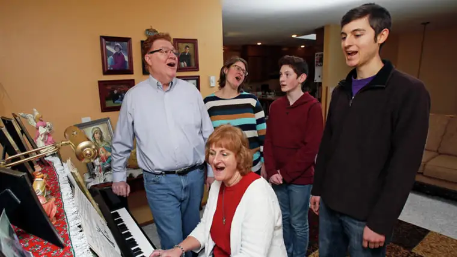

FARGO — As a young boy in California, John Klocke remembers heading outside in December with his large, musical family, into the grass-speckled neighborhoods to spread some Christmas-caroling cheer.
“There was no snow to work around,” he says, chuckling.
His wife, Jan, originally of Enderlin, N.D., also came from a musical family of nine children.
“I started playing organ for Mass in the seventh grade,” she says, noting that her mother, a pianist and singer, introduced music to the whole family.
“My very first memories are with my mom, around age 2 or 3, sitting on a piano bench next to her,” Jan says. “She would sway as she played, and I would sway with her, thinking that’s how you play the piano. I still sway!”
Later, Jan says, she prayed she’d meet someone with a big faith. She got that and a bonus — he was musical, too. “When I met John, oh my goodness, there were even more people to join in on the singing then,” she says.
“It was a match made in heaven,” Klocke says. “In college, we’d get a book of music on a Sunday afternoon and go to the basement of the school of nursing, where Jan was a student, and just sing through the book.”
Because music oozed through their both their veins, he says, “we thought we should give back that gift.”
What started as signing at Mass with their four young children eventually evolved into showing up at nursing homes during Christmastime — first in Jamestown where they lived for a while, and later, in Fargo.
Klocke still recalls how one gentleman, who couldn’t speak, showed his appreciation through his facial expressions. “Tears would just stream down his face,” he says, noting that as young family members joined them, the residents would beam.
Once, he approached a man who “was completely closed up” and sang him a Frank Sinatra tune. “I went over to the wheelchair and took his hand, and by the end he was awake and singing with me,” he says. “Music is down there deep. Music is meant to be a connection to all of us; that’s why it’s one of the last things people hang onto.”
Today, the family will be caroling at Bethany Retirement Living with as many of the brood they can squeeze in. Last year, 24 showed up.
Included will be their youngest son, John, 27. “It’s like a nice, service-oriented Christmas party, with a mission to go and brighten the lives of these people who are oftentimes lonely around this time of year,” he says.
He also appreciates the after-caroling tradition of gathering for a bowl of chili and other warm food.
Laura Devick, the oldest Klocke child, appreciates that her own six children will now share in these memories. “Whenever it starts to get cold out, the kids start asking, ‘When are we going caroling?’ ” she says.
Cousins and friends are also invited. “It ebbs and flows who can come each year,” she says.
“There’s a wide range of responses, but a lot of gratitude,” she notes. “We try to go around and shake people’s hands and make eye contact … and when we have a baby or two along, ‘Whoa!’ We just went up 100 percent points of awesomeness, because the hope of the youth is so important to them.”
Her son, Max, 12, says he loves “just the feeling of it,” and being with family. “We get to see some of our cousins, too,” he says, naming “Silent Night” and “Winter Wonderland” as his favorite carols.
Devick says on a spiritual level, the tradition of singing carols can have an impact.
“It hits me at different times that, wow, I’m not getting younger. I will be older,” she says. “The dignity of the aged is kind of a forgotten, revered gift in our culture.”
The act of caroling at nursing homes, she says, has “awakened” thoughts of how she would want to be treated someday.
“Jesus is truly within each one of us,” she adds, “so sharing our gifts with people in need is very important. If we can recognize Jesus in the least among us, that will do us well, both now and in the future.”
[For the sake of having a repository for my newspaper columns and articles, I reprint them here, with permission, a week after their run date. The preceding ran in The Forum newspaper on Dec. 23, 2017.]